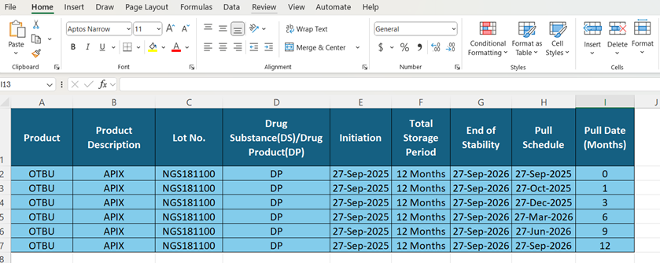

The stability tracker is a tool created in Excel spreadsheet that tracks samples during the stability study of a pharmaceutical product.
The stability study is designed to provide evidence on how the quality of the drug substances / drug products varies with time and environmental factors. Testing of the product (for example, Appearance, Purity, Microbial Contamination) is performed by the laboratory chemist. Laboratory managers can utilize the stability tracker to monitor the life cycle of the product from initiation to completion of the study.
By monitoring the stability study and testing, you obtain information to establish an expiration date ensuring the product's safety, efficacy, and quality for the consumer.
| Name | Description |
| Product | Drug Substance or Drug Product in the stability study (for example, Acetaminophen (Drug Substance) Tylenol (Drug Product). |
| Product Description | Actual name of the active ingredient (DS) or brand label (DP). |
| Lot No. | Unique identification number assigned to the product for DS or DP. |
| Drug Substance (DS) | Active raw ingredient of the product. |
| Drug Product (DP) | Complete, ready-to-use medication (for example, tablet, capsule, or liquid). |
| Initiation | Start date of the stability study. |
|
Total Storage Period |
Entire duration of storage for the product during stability study. |
|
End of Stability |
Final time (date) which the product is tested. |
|
Pull Schedule |
Date when the product is scheduled to be pulled for testing. |
| Pull Date | Number of months is based on the pull schedule date. |
To create the tracker, you will enter the labels and data. When you are finished, your result should look like Figure 1.
Figure 1. Completed Spreadsheet

Entering the Labels:
Enter the labels for the spreadsheet (see Figure 1), as follows:
A1 Product
B1 Product Description
C1 Lot No.
D1 Drug Substances (DS) / Drug Product (DP)
E1 Initiation
F1 Total Storage Period
G1 End of Stability
H1 Pull Schedule
I1 Pull Date (Months)
Note: To avoid entering the labels every time, save a copy to use as a template for future Stability Sample Tracker spreadsheets.
Entering the Data:
Enter the data for the spreadsheet (see Figure 1), as follows:
A2-A7 OTBU
B2-B7 APIX
C2-C7 NGS181100
D2-D7 DP
E2-E7 27-Sep-2025
F2-F7 12 Months
G2-G7 27-Sep-2026
H2 27-Sep-2025
H3 27-Oct-2025
H4 27-Dec-2025
H5 27-Mar-2026
H6 27-Jun-2026
H7 27-Sep-2026
I2 0
I3 1
I4 3
I5 6
I6 9
I7 12
Note: To add additional products, follow the instructions as explained above.
For additional information, see Stability Management